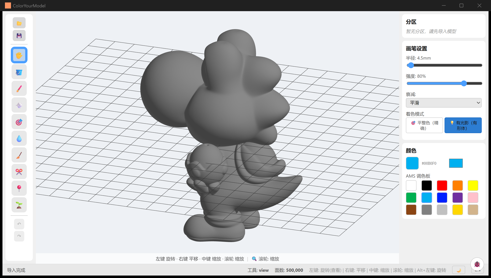
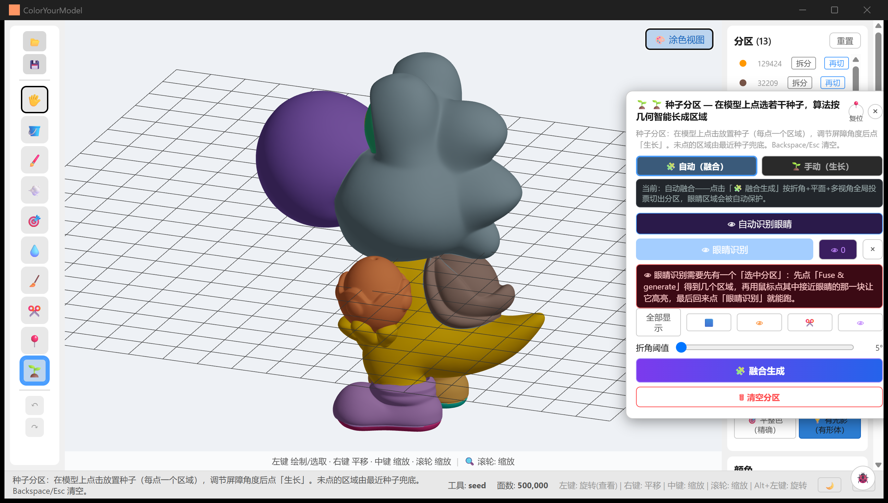
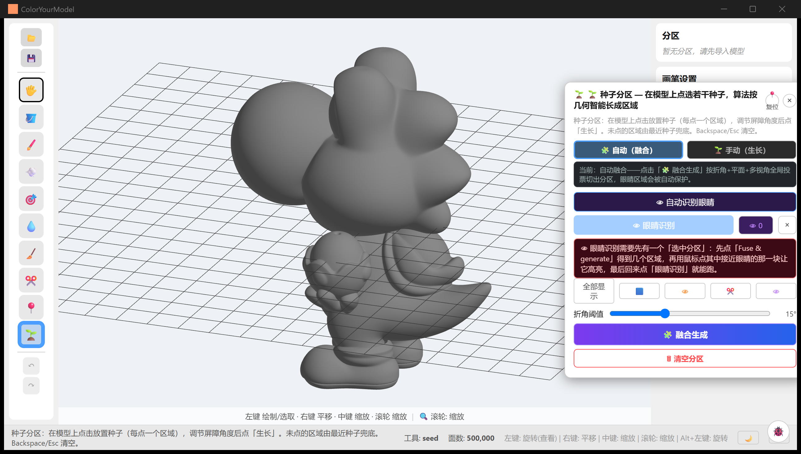
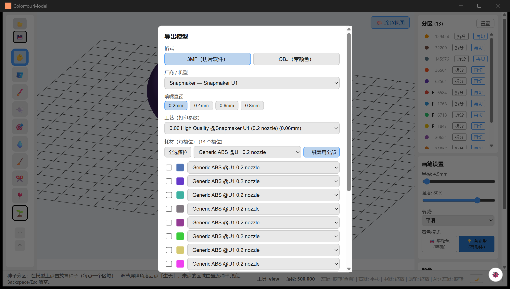

CYM User Manual (v0.1.0)
English | 简体中文
The complete operator's manual: what every button does, every keyboard shortcut, every kind of interaction — plus which capabilities are experimental or have known limitations right now. Written for first-time users; when this page and the code disagree, the source code wins. This page matches v0.1.0 (Windows x64); the app UI is Chinese-first, and the status-bar 中/EN button switches it to English.
For real-run demos see the Examples Gallery; for build & development setup see Getting Started.
What is this software for?
The 3D-printing community is full of "white models" — single-colour STL files that are just a pile of unstructured triangles, with no "regions" and no colour. Colouring such a model in a slicer means clicking thousands of tiny triangles one by one — hopeless for anything detailed.
ColorYourModel (CYM) turns that into a few clicks: it first segments the mesh into meaningful regions (helmet, skin, base…), you paint region by region, and the final export is a standards-compliant 3MF carrying per-region colours — the slicer (Snapmaker Orca / OrcaSlicer) opens it as a fully configured multi-material job, no manual filament mapping.
| Good fit | Poor fit |
|---|---|
| Figures / sculptures (characters, creatures, heads with eyes) | Precise CAD part modelling (this is not a CAD tool) |
| Signs / facades / hard-surface architecture | Work that needs UV texture painting (CYM paints flat region colours) |
| AI-generated meshes (Tripo etc.) exported as STL | Heavily holed meshes (picking falls through — see section 6) |
| Dioramas / miniatures |
flowchart LR
A["Import STL white model"] --> B["Smart segmentation<br/>(fuse / seed grow)"]
B --> C["Refine regions<br/>(merge / split / rename)"]
C --> D["Paint by region<br/>(fill / brush / spray)"]
D --> E["Export 3MF<br/>(colour + machine presets)"]
E --> F["Slicer<br/>multi-material print"]
Download: GitHub Releases. v0.1.0 ships Windows installers and Linux packages (no macOS yet).
Interface overview
The window has five parts: the left toolbar (import/export, 10 tools, undo/redo), the viewport (the 3D model), the right panels (Regions, Brush Settings, Color), the bottom status bar (hints / tool / face count / language / theme), plus a shortcut hint bar along the bottom edge of the viewport.

The interface after import: left toolbar, viewport (a 500K-face cartoon white model), the three right-hand panels (Regions / Brush Settings / Color), and the status bar.
1. Importing a model
- Click the 📂 button (top-left) and pick an STL file (binary or ASCII).
- A large model (1.5M faces) loads in ~3–4 seconds behind a progress bar; the status bar shows the total face count when done.
Import is the whole load — the model comes in with no regions (one big region). That is deliberate: the model is browsable immediately, and segmentation is something you start explicitly in section 4. You can already paint right away — Fill's normal click works radius-bounded without regions.
About formats:
- Only STL is supported; the file picker shows
.stlonly. - To colour a split 3MF: convert the 3MF to STL first. Note that slicer-split part STLs use "print layout" coordinates (parts laid flat on the plate), not assembly positions — importing several parts scatters them, and fragmented plates confuse auto-segmentation, so process them one at a time.
- Sphere-like STLs ("same-latitude rings sharing axis coordinates") used to crash the import; fixed well before v0.1.0.
2. Brushes and shortcuts
The 10 tools in the left toolbar are mutually exclusive (the active one gets a blue outline). Hover any button for a Chinese tooltip; brush, spray and smart brush also show their live radius and strength there.
| Icon | Tool | Behaviour | Notes |
|---|---|---|---|
| 🖐️ | View / Navigate | Camera only, never paints | Left rotate, right pan, middle/wheel zoom |
| 🪣 | Fill | Paints from the clicked face; the rule depends on segmentation | With regions: normal click paints the whole region in one shot; without regions: normal click paints a radius-bounded blob; Shift+click floods along the surface (stops at region boundaries when segmented; floods the whole model when not — careful) |
| 🖌️ | Brush | Smooth continuous painting with edge falloff | Best for freehand; one drag = one undo entry |
| 💨 | Spray | Random scattered dots inside the radius | Spray-can texture; scatter density is fixed (no slider yet); shares radius/strength with the brush |
| 🎯 | Smart brush | Brush constrained to one region + normal filtering | Never crosses region boundaries and never bleeds through thin walls; unsegmented, the normal filter still protects back faces |
| 💧 | Eyedropper | Picks the colour under the cursor | Acts only on the initial click — dragging does not re-pick |
| 🧹 | Eraser | Strips colour back to the default base | Affected by radius only — the strength slider does nothing here (erase is a hard reset, no falloff) |
| ✂️ | Segment brush | Drag across faces, release to create a new region | The primary manual segmentation tool; good for patching fuse results |
| 📍 | Lasso | Click vertices to enclose an area, close at the start point (cyan snap hint) | The boundary follows the surface shortest path, hugging the geometry; see section 4 |
| 🌱 | Seed | Drop seed points, driven from the Seed panel | See section 4 |
Brush Settings (right panel): Radius 0.5–200 mm, Strength 10%–100%, Falloff (Smooth / Linear / Step — note "Step" actually paints about half the shown radius), Shading (Flat = exact WYSIWYG colour; Shaded = keeps form lighting so you can read the shape).
Color panel (right): current-colour swatch + HEX + the system colour picker (any colour), plus the AMS palette of 15 common colours. Palette slots map to filament slots at export time (section 5).
Undo / redo
Painting, erasing, manual regions and lasso all share one undo timeline (managed by the backend): Ctrl+Z undo, Ctrl+Y or Ctrl+Shift+Z redo, or the ↶ / ↷ toolbar buttons. One whole drag stroke is one entry — never dozens. Note that 🗑 Reset partition and Reset are NOT undoable.
Shortcut table (every shortcut in this release)
| Keys | Context | Action |
|---|---|---|
Alt (hold) |
Any tool active | Temporarily rotate the camera (release returns to the tool) |
Ctrl+Wheel |
Brush/spray/smart/eraser hovering the model | Resize the brush (0.5–200 mm), live in the status bar |
Ctrl+Z |
Global (except while typing) | Undo; with the lasso, pops the last point while a loop is open |
Ctrl+Y / Ctrl+Shift+Z |
Global | Redo (no per-point redo for open lasso loops) |
Backspace |
Lasso tool | Remove the last placed point |
Esc |
Lasso tool | Cancel the open loop |
Enter |
Lasso tool | Close the region (at least 3 points) |
Esc / Backspace |
Seed tool | Clear all placed seeds and exit eraser mode |
Esc |
Seed panel open | Closes the panel and clears all placed seeds, returning to the View tool (the panel's × does the same; closing never keeps seeds) |
Ctrl+Shift+L |
Global | Toggle the debug log panel (🐞) |
Tools themselves have no number-key shortcuts — switch tools via the toolbar. Undo shortcuts are inert while you type in a text field.
3. Camera and interaction
CYM uses an orthographic camera: zooming changes the view scale, not perspective — the model never distorts, which makes checking paint coverage easy.
| Input | Effect |
|---|---|
| Scroll wheel | Zoom, range 0.1×–500× (500× resolves sub-millimetre detail) |
| Middle-drag | Zoom (equivalent to the wheel, continuously smooth) |
| Left-drag | Rotate (View tool; or any tool pressed on empty space) |
| Right-drag | Pan |
Alt+Left |
Force-rotate under any tool |
Tips:
- Rotate while painting: no need to switch back to View — move the mouse off the model and drag, or hold
Altand drag. Release and keep painting. - Fine detail:
Ctrl+Wheeldown to a 1–2 mm brush, zoom to 50×–100×, paint dots in Flat shading. - No inertia: drags stop dead on release (damping is intentionally off) — what you drag is what you get.
- With the fill/eyedropper/segment tools, the region under the cursor highlights on hover — see what you are about to paint before clicking.
- Brush-class tools show a 3D ring that follows the mouse with the live radius and colour.
- Once regions exist, a 🎨 Paint view / 🗺️ Segment view toggle appears in the top-right of the viewport: segment view colourises regions by label and outlines boundaries (yellow in the dark theme, amber-brown in light) for quality checks; neighbouring regions are essentially never the same colour (30 palette slots with adjacency-aware allocation).

Segment view: the 500K-face cartoon model fused at fold threshold 5° into 13 regions — adjacent regions in different colours, boundaries outlined.
4. Smart segmentation
Segmentation starts from the 🌱 seed tool: click 🌱 in the toolbar and a draggable Seed panel pops over the model (drag the title bar to move, double-click it or press 📍 to reset, close with × or Esc — note closing also clears any placed seeds).

The Seed panel's Auto (fuse) tab: mode tabs, eye-detection entries, per-layer solo buttons, the fold-threshold slider and "Fuse & generate".
flowchart TD
P["🌱 Seed panel"] --> AUTO["🧩 Auto (fuse)"]
P --> MANU["🌱 Manual (grow)"]
AUTO --> F["Fold threshold → Fuse & generate<br/>planar + multiview + dihedral edge vote"]
MANU --> S["Place seeds / suggest / planar·multiview detect"]
S --> G["Barrier angle → Grow"]
F --> R["Regions<br/>(then merge/split/lasso to refine)"]
G --> R
Auto (fuse) — the recommended first stop
One click produces the partition: Fold threshold (0–35°, default 2°) + 🧩 Fuse & generate. It votes every edge across three channels — planar regions, multi-view evidence, and the dihedral backbone — and only cuts when the cut votes win, which suppresses over-splitting and keeps regions chunky. A staged progress bar runs while it works (detecting planar regions → rendering multi-view evidence → fusing by edge vote).
Choosing the fold threshold (the one parameter that matters):
| Model class | Suggested value | Why |
|---|---|---|
| Sculpted figures (characters / creatures) | 0–3° | Sculpt folds at neck/shoulders/hips spread over many sub-5° edges; only a low threshold separates head / limbs / tail |
| Hard surface (signs / kiosks / architecture) | 5–15° | Creases are already hard boundaries; a higher threshold keeps flat walls whole |
Lower = finer, higher = coarser. Too fragmented? Raise it and fuse again. Not splitting? Lower it. A 1.5M-face model takes about a minute at 0° — that is normal. Detected eye regions are protected and survive the fuse.
Manual (grow) — fine control
- Click the model to place seeds (each green dot = one future region);
Backspace/Escclears all, and 🩹 Eraser mode deletes a single seed on click. - Or let the panel suggest them: 💡 Suggest seeds (saliency-based; tunable count 2–40, curvature weight, concavity weight), 🟦 Planar seeds (flat-patch detection), 👁 MultiView (multi-angle consensus). Suggestions appear as magenta ghosts — click near one to accept it.
- Set the Barrier angle (10–90°, default 45°: adjacent faces whose normals differ more stop the growth), optionally tick Optimize (merge tiny regions), then 🌱 Grow.
- Patches no seed claims fall to the nearest seed.
Eye detection (two entries at the bottom of the panel):
- 👁 Auto eye detect: scans the whole mesh for symmetric eye bumps and regions them — no prerequisites.
- 👁 Eye detect: decomposes the currently selected region into globe / sclera / eyelid / socket sub-regions. Requires a selected region first — fuse once, then use 🖱 Pick a partition to click the eye-area region on the model.
Regions panel (right) — refining
Fuse/grow results are a starting point; the Regions panel cleans up:
- Select: click a list entry, or click a region on the model (highlight in the viewport).
- Merge:
Ctrl+clickmulti-select (first pick is the survivor), then merge. - Rename: double-click an entry.
- Split: re-cut an oversized region along its internal creases (default threshold 30°).
- Re-cut: re-run a whole algorithm inside one region (the fix for tubular limbs convex decomposition can't cut); 8 algorithms, see section 6.
- Reset: wipe all regions and paint (not undoable; asks for confirmation).
The lasso (📍) is the last mile of refinement — where geometry offers no boundary (a smooth cheek, a flat wall band), draw the region by hand. Click vertices in turn, close at the start point or press Enter (≥3 points); closing runs a progress bar (snap → surface boundary completion → enclosure → smoothing → commit) because on million-face meshes every stage is real work.
5. Exporting 3MF
Click 💾 in the toolbar (a model must be loaded) to open the export dialog:
- Format: 3MF (for slicers, default) / OBJ (with colour).
- Vendor / Machine: currently the embedded Snapmaker U1 preset (nothing to install).
- Nozzle diameter: 0.2 / 0.4 / 0.6 / 0.8 — the process list filters automatically.
- Process: the print profiles available for that machine + nozzle (0.20 Standard etc.).
- Filament (per slot): one filament per palette slot; tick several slots and Apply to selected, or Apply to all. A slot colour preview renders before export.
- Target slicer: Snapmaker Orca (default) or OrcaSlicer (generic) — decides the machine id written into the file.
- Choose location & export. Machine/nozzle/process/filaments/slicer are remembered for next time (the format switch is not — it resets to 3MF).

The export dialog: 13 regions map to 13 filament slots, each selectable individually or in bulk.
The exported 3MF is verified end-to-end: imported into Snapmaker Orca (U1), machine, process and multi-filament colours all land correctly (see the verification case).
OBJ: writes .obj + .mtl with per-face colours (quantized to at most 256) and needs no machine/process picks. For Blender / MeshLab / web viewers; for printing, use 3MF.
6. Experimental features and current limitations
These work today, but know their edges — not bugs, just the honest water level of v0.1.0.
Experimental
| Feature | Status | Advice |
|---|---|---|
| The 5 advanced re-cut algorithms: SDF graph-cut / concavity fields / convex decomposition (V-HACD) / curve skeleton / FH graph | The first two are marked experimental in code; all five are recent additions that collapsed hundreds of fragments into 4–7 semantic parts in benchmarks, but are parameter-sensitive | Stick to curvature k-means / dihedral / shape diameter by default; A/B the rest when those fall short |
| ✂️ Cross-section detection (Seed panel) | Purely visual evidence: draws feature cross-sections, creates no regions and never votes | Treat it as an analysis overlay, not a segmenter |
| 👁 Eye detection | Sclera is heuristic and low-confidence; globe/eyelid/socket are more reliable | Use as an underlay, refine by hand |
| 👁 MultiView detection | A second-opinion channel (12-view projection consensus) | Pair with planar seeds; weak alone |
🐞 Debug log (Ctrl+Shift+L) |
Diagnostics: shows the frontend log ring | Attach a screenshot when filing bugs |
Known limitations (v0.1.0)
- Repeated passes within one stroke darken the colour: the same face gets mixed multiple times inside a stroke. Slow down, or use fill/smart brush to avoid it.
- "Step" falloff paints about half the shown radius, with no separate UI indication.
- Region boundaries are jagged: boundary smoothing only mitigates; ruler-straight edges need a different approach.
- Holes in the mesh let click-picking fall through (the ray escapes through the hole).
- Very large models (4M+ faces): fusing takes long and can stall the UI — split or decimate first; the first switch to segment view also computes once with a visible hitch.
- OBJ export quantizes to at most 256 colours; beyond that, colours merge.
- The machine preset library currently holds only the Snapmaker U1: other machines should export with OrcaSlicer (generic) and assign filaments in the slicer.
- Segment-view colours ≠ your paint: segment view shows diagnostic colours by region label; the shipped colours are what you painted (labels are the truth, colour is the output).
Feedback
Crashes, clearly wrong segmentations, unimportable exports: please file at GitHub Issues with the face count (status bar), OS, and a Ctrl+Shift+L log screenshot.
Appendix: status bar, language, theme
- Status bar: live hints on the left (lasso and seed tools print full usage on activation; otherwise the last message stays), the active tool and face count in the middle, and on the right the input cheatsheet plus three switches: the 🐞 debug log, 🌙/☀️ dark/light theme, and the 中/EN UI language (theme and language persist across restarts).
- The Regions panel shows "no regions yet" whenever there is nothing to list (before import, or after import before segmenting); the paint/segment view toggle appears only once regions exist.